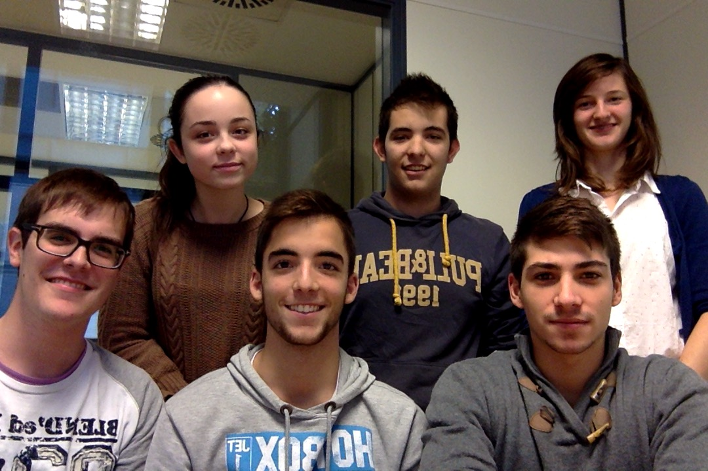

The Team, which consists of Sandra Gonzalez Maicas, Jaume Forner Escrig, Carlos Garcia Arbeloa, Fernando González González-Carrión, Jaume Francesc Roig Marmaneu and Aliénor Creismeas, presents you its Geometry Application :
Indeed, in this page, we can find the link to a main menu page which allow you to calculate the perimeter, the area, the surface or the volume of distinct geometrical figures.
Click here to see more!